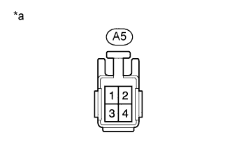
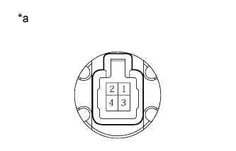
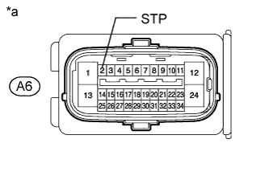

DTC C1425 Обрыв в цепи выключателя стоп-сигналов |
| Код DTC | Условие обнаружения DTC | Неисправный участок |
| C1425 | При напряжении на контакте IG1 от 9,5 до 17,4 В в течение не менее 3 с сохраняется обрыв в цепи выключателя стоп-сигналов. |
|
| 1.СНИМИТЕ ПОКАЗАНИЯ ПОРТАТИВНОГО ДИАГНОСТИЧЕСКОГО ПРИБОРА (STOP LIGHT SW) |
Выключите зажигание
Подсоедините портативный диагностический прибор к DLC3.
Установите замок зажигания в положение ON (ВКЛ).
Включите портативный диагностический прибор.
Войдите в следующие меню: Chassis / ABS/VSC/TRC / Data List.
| Информация на дисплее прибора | Измеряемая величина / диапазон измерения | Нормальное состояние | Замечание по диагностике |
| Stop Light SW | Состояние выключателя стоп-сигналов / ON (ВКЛ) или OFF (ВЫКЛ) | ON (ВКЛ): педаль тормоза нажата OFF (ВЫКЛ): педаль тормоза отпущена | - |
Убедитесь, что состояние выключателя стоп-сигналов на дисплее портативного диагностического прибора изменяется в соответствии с состоянием педали тормоза.
|
| ||||
| OK | |
| 2.СНОВА ПРОВЕРЬТЕ DTC |
Сбросьте коды DTC (Нажмите здесь).
Запустите двигатель.
Нажмите педаль тормоза несколько раз, чтобы проверить работу цепи стоп-сигналов.
Проверьте, выводится ли тот же DTC (Нажмите здесь).
| Результат | Следующий шаг |
| DTC не выводится | А |
| DTC выводится | B |
|
| ||||
| А | ||
| ||
| 3.ПРОВЕРЬТЕ НАПРЯЖЕНИЕ НА КОНТАКТЕ (КОНТАКТ ПИТАНИЯ ВЫКЛЮЧАТЕЛЯ СТОП-СИГНАЛОВ) |
Убедитесь, что фиксирующая и соединительная части разъемов не ослаблены.
Отсоедините разъем А5 выключателя стоп-сигналов.
|  |
Измерьте напряжение в соответствии со значениями, приведенными в таблице.
| Контакты для подключения диагностического прибора | Состояние | Заданные условия |
| A5-2 - масса | Всегда | 11 - 14 В |
| *a | Вид спереди разъема со стороны жгута проводов: (к выключателю стоп-сигналов) |
|
| ||||
| OK | |
| 4.ПРОВЕРЬТЕ ВЫКЛЮЧАТЕЛЬ СТОП-СИГНАЛОВ |
Снимите выключатель стоп-сигналов (Нажмите здесь).
|  |
Измерьте сопротивление в соответствии со значениями, приведенными в таблице ниже.
| Контакты для подключения диагностического прибора | Положение переключателя | Заданные условия |
| 1 - 2 | Штырь выключателя не нажат | Менее 1 Ом |
| Штырь выключателя нажат | 10 кОм или более |
| *a | Устройство с неподсоединенным жгутом проводов (Выключатель стоп-сигналов) |
|
| ||||
| OK | |
| 5.ПРОВЕРЬТЕ ЭБУ СТОП-СИГНАЛОВ |
Проверьте ЭБУ стоп-сигналов (Нажмите здесь).
|
| ||||
| OK | |
| 6.ПРОВЕРЬТЕ НАПРЯЖЕНИЕ НА КОНТАКТЕ (STP) |
Убедитесь, что фиксирующая и соединительная части разъемов не ослаблены.
Отсоедините разъем A6 ЭБУ системы противоскольжения.
|  |
Измерьте напряжение в соответствии со значениями, приведенными в таблице.
| Контакты для подключения диагностического прибора | Состояние | Заданные условия |
| A6-2 (STP) - масса | Педаль тормоза нажата | 8–14 В |
| Педаль тормоза отпущена | Менее 1,5 В |
| *a | Вид спереди разъема со стороны жгута проводов: (к ЭБУ системы противоскольжения) |
|
| ||||
| OK | |
| 7.СНОВА ПРОВЕРЬТЕ DTC |
Сбросьте DTC (Нажмите здесь).
Запустите двигатель.
Нажмите педаль тормоза несколько раз, чтобы проверить работу цепи стоп-сигналов.
Проверьте, выводится ли тот же DTC (Нажмите здесь).
| Результат | Следующий шаг |
| DTC не выводится | А |
| DTC выводится | B |
|
| ||||
| А | ||
| ||